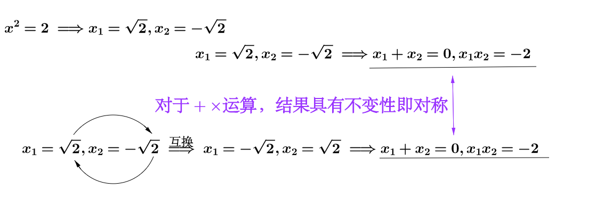

“群论”研究些啥？
作者：马同学图解数学
按：对群论感兴趣，可以阅读《代数》（Artin著，机械工业出版社）这本书，群论是抽象代数这门学科的一部分，高中生能看懂的。
群论不简单么？一个集合和一个二元运算，并且满足群论四大公理。黑纸白字，没有一个符号、一个汉字是我不认识的。经过这么多年的数学训练，加上刷题，那是想证明就证明、想计算就计算，砍瓜切菜、手起刀落、猛虎下山、势如破竹。
但是！我很不爽，这种感觉好比有人叫你去砍人，你也不问问为什么，一言不合就出手把人砍翻在地，或者被人砍翻在地，这种行为我们一般把它成为脑残，你的身份就是别人的小弟。
我们不要做数学的小弟，刷题不能给我们自由，唯有思考可以。
下面就讲一下我对群论的一些思考。
1 集合
讲群论先从集合讲起，集合简单来说就是把一堆东西放在一起（暂时就别提罗素悖论了）：
可是这用处不大啊，东西之间得有相互作用才能更好的描述世界啊：
东西我们把它称之为对象，对象之间的互相作用我们称之为操作或者运算。
自然数 是一个集合，我们从自然数 这个集合出发，通过运算可以创造越来越大的集合( 、 、 、 、 分别是自然数、整数、有理数、实数、复数)：
运算不止加减乘除，数学学到后面就多了很多抽象运算。甚至从集合和运算的角度来看，学数学的过程很多时候就是在不断的扩大对集合和运算的认知。理解的集合和运算越多，相关领域的数学基本上也就理解了。
其中有种特殊的集合+运算就是群。
2 群
简单来说，群的作用是描述对称。
2.1 什么叫对称？
我们来看看：
-
正方形对称吗?
-
物理定律对称吗？
-
多项式的根对称吗？
上面的问题的答案都是：对称！
对称就是：“某种操作下的不变性”，关键字是两个：“操作”和“不变性”，要说明这点让我们通过上面的三个问题来理解。
2.1.1 正方形是否对称？
先看看正方形，其实它对称是蛮明显的，符合我们日常的语义，可是我们也要把它放到数学的语境里来分析一下：
围绕中心点旋转这个操作，正方形所具有的不变性就是对称。
我们换一种操作，正方形也可以对称：
围绕中垂线这个操作，正方形也具有不变性，也是一种对称。但是因为操作变了，所以这种对称和上面的那种对称不是同一种对称，之后我会再说到这个问题。
假如刚才的正方形只是桌子的桌面，继续围绕中垂线翻转这个操作就不对称了：
2.1.2 物理定律是否对称？
这个听起来就有点奇怪了，但是从不变性的角度出发，相对于时间流逝这个操作，今天和昨天的物理定律保持不变，我们可以说物理定律相对时间对称。相对于空间改变这个操作，地球和月球上物理定律保持不变，我们可以说物理定律相对空间对称。
这听起来蛮哲学的，不是说数学学到后面都是哲学吗？
2.1.3 多项式的根是否对称？
说明下，多项式方程指的是形如 这样的方程。
群论就是从解多项式的根开始发展起来的，所以自然要谈一下为什么多项式的根具有对称性。
首先要从简单的一元二次方程说起：

从上图中来看，相对于 运算，多项式的根互换之后结果不变，针对这个运算它们是对称的。对于 运算就没有对称性。
这个对称性有什么用？根据 韦达定理，一元二次方程 ，其中 ，系数是已知的，实际上我可以联立这样的二元方程组求得方程的根。
所以顺便说一下，群论的发展过程是这样的：
- 1.
数学家发现根与方程系数的关系（韦达定理）
- 2.
通过系数计算根的时候发现根的对称性
- 3.
伽罗瓦根据根的对称性发现了伽罗瓦群
- 4.
群论蓬勃发展
关于伽罗瓦与一元五次方程的问题，与群紧密相关，但是又涉及到更多别的知识，本文就不继续推下去了。
2.2 对称如何用数学表示？
让我们从正方形开始解读如何来表示对称.
之前说过，对称最重要的是在“某种操作下的不变性”，所以我们先讨论正方形围绕中心点旋转，总共有4种对称操作：
或许你觉得应该不止4种操作，比如转两圈，这可以等价于“保持不动”，而转45°，这会导致不对称（因为你会明显发现变化）。
起始点是完全不用关心的：
甚至是不是正方形也不重要：
是的，群只关心对称最本质、最抽象的性质。所以我们只关心操作，只需要把操作放到集合里。
要放进去我们必须要把操作给数学化，也就是符号化，我们起码有两种符号化的选择，类比于加法或者乘法：

稍微解释一下，什么叫做类比于加法？比如我们通过类比于加法得到 ，“保持不变”映射为了0，“旋转90°”映射为了 ，而两个操作的依次进行映射为加法。所以“保持不变” + “旋转90°” ＝ ＝ “旋转90°”，是合理。而“旋转90°” + “旋转90°” ＝ ＝ “旋转180°”，也是合理的。注意，运算不需要符合交换律。
还要说明的一点是，这里的加法和乘法是模加法、模乘法（即先计算再求模），用钟表来类比，按照12小时制算， ， 。
这样我们就得到了两个群，一个是 ，一个是 。但是我们明明知道它们应该是一样的啊，只是符号不一样，运算不一样，所以我们可以称之为同构，就是结构相同的意思。
这里先用到群的解析式了，下面就要解释一下。
2.3 群的定义
先祭出大杀器，群的标准定义：
群是一个集合 ，连同一个运算" "，它结合任何两个元素 和 而形成另一个元素，记为 。符号" "是对具体给出的运算，比如整数加法的一般占位符。要具备成为群的资格，这个集合和运算 必须满足叫做群公理的四个要求：
封闭性：对于所有 中 ，运算 的结果也在 中。
结合性：对于所有 中的 和 ，等式 成立。
单位元：存在 中的一个元素 ，使得对于所有 中的元素 ，等式 成立。
逆元：对于每个 中的 ，存在 中的一个元素 使得 ，这里的 是单位元。
数学是自然科学的语言，和日常的说话相比最大的优点是精确没有歧义，缺点就是晦涩不好理解。群的定义也是这样，下面我们用人话来解释群。
套用正方形的例子来解读群的定义，选 这个群吧：
-
集合里的对象：所有保证对称性的操作。
-
二元运算：模加法。
-
封闭性：操作相加还是在集合内，比如 。
-
结合性： 。
-
单位元：保持不动就是单位元，映射为0，所以 。
-
逆元：首先旋转正方形的操作是可逆的，所以 ，同时这还是一个循环的运算， ，都可以说是 的逆元。
其实吧，我可以再抽象一点， ，这个群基本上已经没有原来正方形旋转的影子了。群比我们之前学的数学的抽象性更近了一步，要不怎么放在抽象代数课程里面呢？本文只是想稍微让群具体一点。
2.4 群的结构与同构
之前说过，正方形围绕中垂线翻转是不一样的对称
上图我把运算直接表示为" "。这个群很明显和正方形围绕中心点旋转的群不一样，所以对称也就不一样，用群的术语来说就是，这两种群结构不一样。
现实中，还有各种各样的对称，比如正方形和圆：
这两种对称的结构也不同，对应的群也不一样。群论就是对各种群的研究。
2.5 进一步的思考
关于同构，这里再进一步思考，圆是有无数种对称操作的，之前提到的相对于时间对称的物理定律，也是有无数种对称操作的（因为时间是可以无限流逝的），从某种意义上讲，两者是不是同一种对称，也就是同构？如果是同构，那么我只要研究一个群就可以研究两者了。
思考，才是数学最大的乐趣所在。